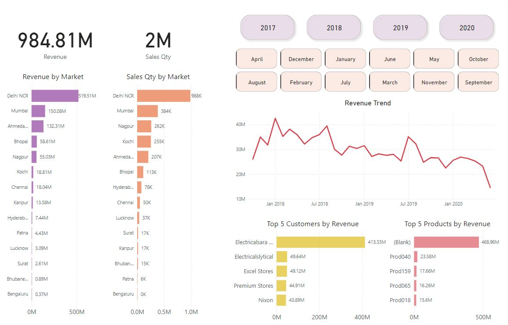
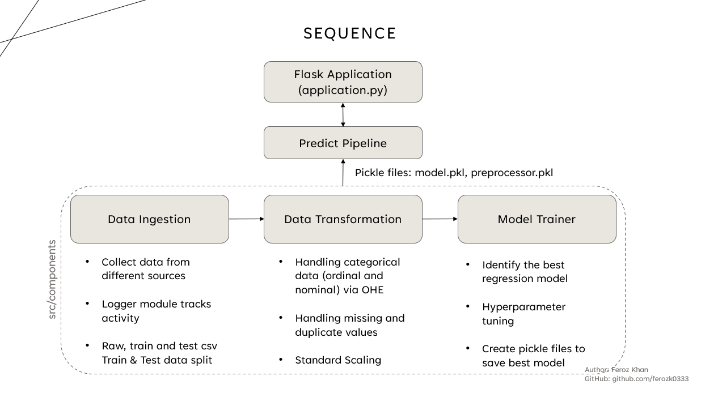

Project Descriptions
Short and readable write-ups.
Fine-Tuning CNN Architectures Using Transfer Learning
Context
Baseline CNN plateaued at 91% accuracy; required stronger generalization on limited labeled data.
Approach
- Converted 28×28 grayscale → 3-channel RGB; applied Resize / CenterCrop / Normalize transforms
- Built custom PyTorch Dataset + DataLoader ETL pipeline
- Loaded pretrained VGG16 (ImageNet) and ResNET models, froze backbone, replaced classifier head with custom head
- Trained with CrossEntropy + Adam using K-Fold CV and Bayesian Optuna tuning
Architecture

Result
Improved accuracy to 95.5% (+4.5%), reduced overfitting via weight decay tuning, and achieved faster convergence vs training from scratch for a domain-specific, smaller dataset.
Sentiment Analysis for Healthcare Domain with NLP & MLOps
Context
Built an NLP classification system to analyze rural patient text and assist urban therapists with sentiment signals and recurring thought categorization across 7 predefined mental health concern classes.
Approach
- Pipeline: Standardized preprocessing (tokenization, stopword removal, TF-IDF), strict train/validation split to prevent leakage, normalized SQL schema for storing predictions and metadata.
- Database: Designed and normalized SQL database to store text entries, timespamp, sensitive PII information. Wrote queries with JOINs.
- Models: Multinomial Naive Bayes (baseline) vs Logistic Regression (self-trained model).
- Experiments: MLflow-based tracking of hyperparameters, metrics, model artifacts, and version comparisons.
Architecture

Results
Logistic Regression improved accuracy from 72% (Naive Bayes baseline) to 94.65%, increased ROC-AUC to 0.84, and reduced cross-demographic F1 disparity by 12% via class rebalancing and threshold calibration. Improved recall for high-risk categories by 9%.
Agentic RAG with Hallucination Filtering & Self-Reflection
Context
Designed an agentic Retrieval-Augmented Generation (RAG) system to reduce hallucinations and improve factual grounding in multi-domain question answering.
Approach
- Routing: Query classification to vector DB (FAISS) or Tavily web search
- Retrieval: Embedding pipeline with MMR + multi-query expansion to improve recall and reduce redundancy
- Generation: Context-aware answer synthesis using OpenAI APIs
- Validation: Binary hallucination grading (LLM + NLI) with adaptive self-reflection and query rewriting
- Flow Control: LangGraph state machine for modular agent orchestration
Architecture

Metrics
Improved GPT-Judge factual accuracy by 15% vs baseline RAG, reduced retrieval redundancy by 20%, and decreased hallucination rate by 18% in simulated evaluation.
Deployment & MLOps
Containerized with Docker, deployed on AWS EC2/SageMaker, CI/CD via GitHub Actions, and exposed scalable FastAPI endpoints with Pydantic validation.
Key Design Decisions
Adopted agentic routing for modularity, integrated automated hallucination grading for reliability, and prioritized retrieval diversity (MMR + multi-query) to improve grounding.
Fine-Tuning LLM with Quantization & LoRA
Context
Fine-tuned Gemma-7B for customer support response generation using parameter-efficient LoRA adapters, optimized for lower-memory training and cost-effective inference.
Pipeline
- Data: Tokenized input/response pairs (max_length=512), added [PAD] token, and generated labels for supervised causal LM
- Training: LoRA on attention projections (q_proj, v_proj) with r=16, α=32, dropout=0.1; AdamW + gradient accumulation
- Efficiency: Loaded model in 8-bit via bitsandbytes to enable training on smaller GPUs
- Artifacts: Saved LoRA adapters and checkpoints for lightweight deployment
Results
On a 300-sample blind test set, improved response relevance by 14% vs base Gemma-7B, increased win-rate to 62% in pairwise preference eval, and reduced hallucinated/irrelevant replies by 11%. 8-bit + LoRA reduced peak GPU memory by ~60%, enabling deployment on lower-cost infrastructure.
Key Design Decisions
Chose LoRA for fast iteration and small artifact size, 8-bit quantization for hardware efficiency, and targeted attention modules (q/v) for best quality–cost tradeoff.
End-to-End Sales BI Pipeline & Dashboard
Context
Built a scalable BI pipeline to transform raw transactional sales data into structured analytics-ready datasets, enabling stakeholders to monitor revenue, customer performance, and product trends in real time.
Architecture & Pipeline
- Data Model: Designed star schema with fact (transactions) and dimensions (customer, product, market, date)
- ETL: Cleaned and transformed ~150K records using SQL + Power Query (handled duplicates, nulls, invalid entries, format standardization)
- Orchestration: Migrated workflow to Airflow for automated scheduling and improved scalability
- Integration: Connected directly to MySQL for centralized, near real-time data access
Analytics & Visualization
- Built KPI dashboards tracking revenue, sales quantity, top customers, and product contribution
- Implemented Decomposition Trees to analyze drivers of order profit and identify underperforming segments
- Enabled drill-down views by region, product category, and customer segment
Dashboard Preview

Results
Reduced manual reporting and ad-hoc analysis by ~20%, improved decision latency, and provided actionable insights into regional revenue trends and product performance.
End-to-End Regression ML System with AWS CI/CD
Context
Built a production-style regression system to predict student exam scores from demographic and academic signals, packaged as a web app and deployed on AWS with CI/CD.
Pipeline & Modeling
- Ingestion: Raw CSV train/test split with logging for traceability
- Transformation: Missing/duplicate handling, One-Hot Encoding for categorical features, StandardScaler for numeric features
- Feature Selection: Correlation pruning + L1 regularization to reduce multicollinearity and remove noisy features
- Modeling: Ridge/Lasso/ElasticNet regression with hyperparameter tuning (CV) to control overfitting
- Artifacts: Persisted preprocessor + best model as versioned pickle artifacts for consistent inference
High Level Workflow
Results
Achieved MAE 3.8 and RMSE 5.1 on held-out test data (R² 0.89). Regularization reduced train–test gap and improved stability vs an unregularized baseline (MAE 5.0, RMSE 6.6).
Deployment & MLOps
Containerized Flask inference service, pushed images to AWS ECR, deployed on EC2, and automated build/test/deploy with GitHub Actions. Designed the system so model + preprocessor artifacts can be swapped without rewriting the app.
Key Design Decisions
Used L1/L2 regularization for generalization under correlated features, enforced consistent preprocessing via saved pipelines, and chose Docker + ECR for repeatable deployments and environment parity.